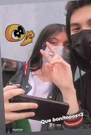
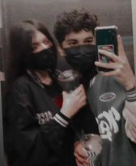
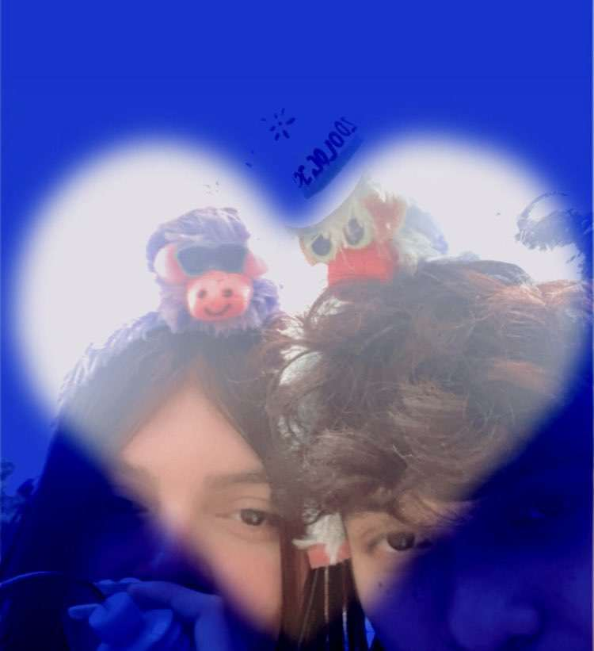
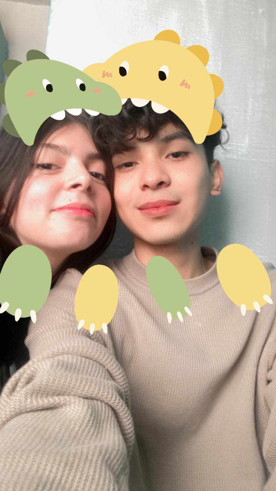

Primero que nadaa quiero que sepas que te amo muuucho❤❤ Y ya todo este tiempo que llevamos juntos a sido increiblee, aun recuerdo la primera vez que no tomamos de la mano y los dos andabamos bien nerviosos y tambien cuando fuimos por los pastes, creo que fue muy bonito esa vez sentarnos y solo conocernos un poco mas:3 Ya tengo un montoooon de cosas que me has dado y soy muy felii y creo que el domingo tendre muchas mas y las cuidare con mucho amor como me las daaas c: Te amoooo demasiado, no sabes cuantooo, cada que te veo te ves mas y mas linda, eres mi niña bonita y aaaa como me gusta que estes siempre para mi y seas mia nadamas, creeme que todos estos momentos que hemos pasado cada vez son mejores y no digaas todo este tiempo se a pasado super rapido pero yo soy feliz de estar con alguien como tú. Alguien con quien siempre es linda conmigo, me apapacha, me hace muy feliz, me hace cartitas, siempre esta pendiente de mi yyy creo que nunca acabaria. Alguien que me a ayudado en muchas cosas y sobre todo que me ama muchito Sin duda alguna sé que estoy con la mejor persona que existeee. Nunca dudes que yo tambien estare para ti siempre siempre, y oyeee solo te vengo a recordarte que te amo asi tal como tú eres y no sabes cuantooo:3 Asi que solo puedo decir que me gustas muchitoooooo y todas las cosas contigo siempre son muy especiales solo porque estoy contigo y cada vez te amito mucho maaas. Pd: Ya no puedo escribir mas pq se vera mal pero en las cartitas se complementa❤
Recuerdos<33

Recuerdas ese dia? Nuestra primera foto y que según me voltie cuando me quisiste dar un beso ajsak

Y que tal este diaaa? Ibamos mucho al parque c:
Recuerdos<33

Aqui un pequeño salto en el tiempo cuando fuimos a chapultepec por tu cumpleaños:3 Fue muy lindo ese diaaa

Este es mas reciente y nos vemos bien lindoooos, muy lujuriosos tambien ajsja